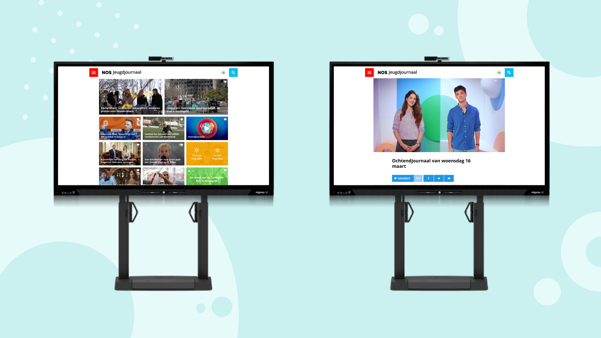
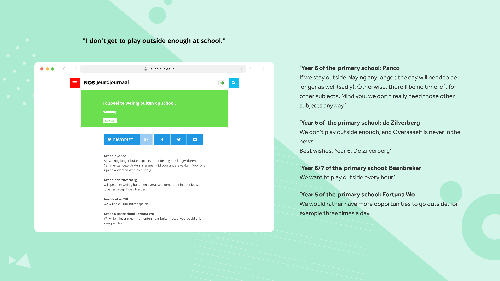
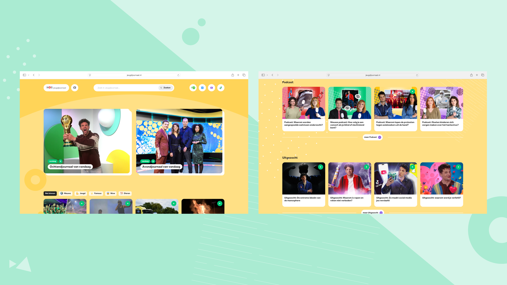
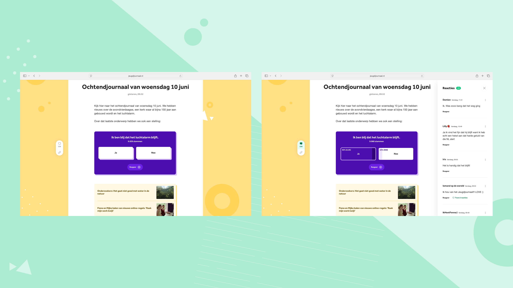

Bringing the Classroom Into Focus
Redesigning the Jeugdjournaal website to better serve teachers and students in the modern classroom

Problem
The website was originally designed for desktop use, but a decade later it had become primarily a classroom tool, accessed daily on digital whiteboards. Teachers relied on it to kick off the morning news and to use its articles as a medium for building news literacy among their students.
Research
A survey was distributed to 128 teachers, caretakers, and parents to understand their needs and expectations when accessing the Jeugdjournaal website on a digital whiteboard or smart TV. This was complemented by in-depth interviews with 10 primary school teachers and 20 parents, exploring their individual use cases and the challenges they face around digital media consumption and news overload.
Findings
- The website's chronological content structure caused in-house productions to quickly get buried whenever there was a high volume of news to publish
- Teachers visited the website every morning for the daily news ritual, which occasionally sparked chaos in the classroom when students spotted an article about their favorite football club
- Teachers regularly searched for video-based articles to play during lunch breaks, when students ate together in the classroom
- Classrooms would collectively comment on articles together, creating a distinctive and organic form of joint comment literacy that teachers facilitated across the Netherlands

Solution
- Restructured the experience around two key daily moments: the morning and evening news
- Introduced subject tagging to articles, mirroring the playlist structure Jeugdjournaal already used on their YouTube channel
- Added content-type labels to help teachers quickly identify and filter for video-based articles
- Gave prominent placement to Jeugdjournaal's in-house productions on the front page

- Designed the poll to be more interactive — intended for active use on digital whiteboards
- Reader comments were moved next to the article, so they can be read without disrupting reading (or watching a video)

Areas We'd Like to Explore
- Making the morning and evening news more interactive, moving beyond simply publishing the broadcast video
- Creating space for short-form content that offers a lighter counterpoint to more article-heavy topics
- Enriching search results to surface more meaningful context, rather than passively listing articles
Next case study
Where Teenagers Come to Understand the World →